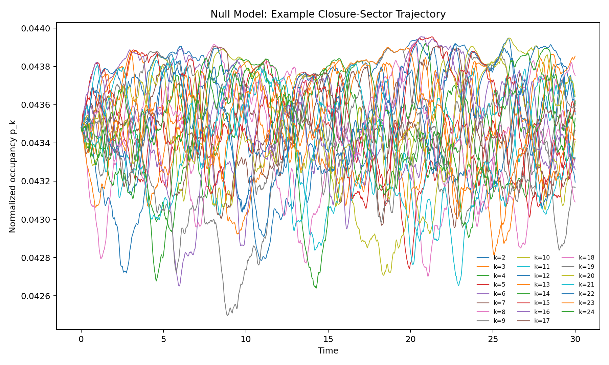
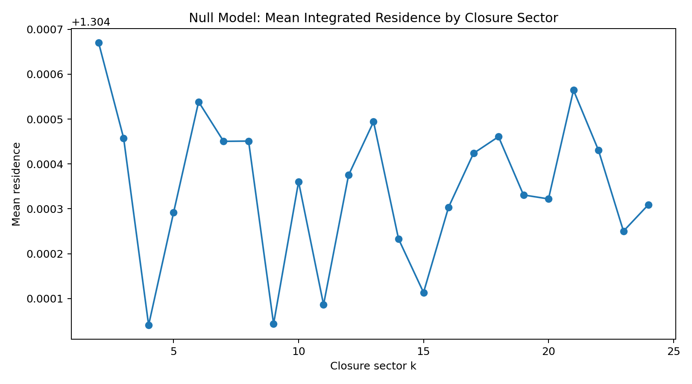
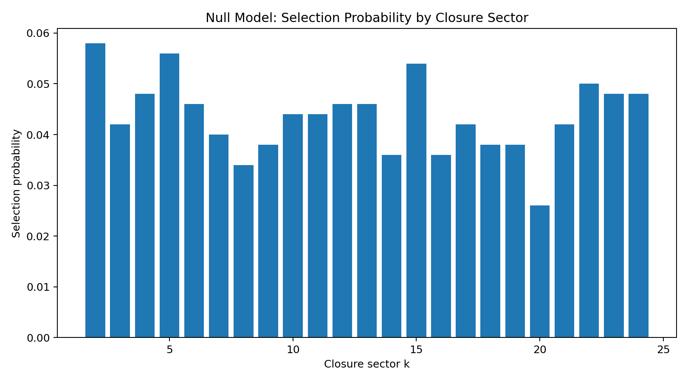

Entry 01
Null-model baseline for closure-sector dynamics.
Purpose This script establishes the unbiased control experiment before any EDF-specific closure functional B_k is introduced.
entry_01
Outputs folder: output
Figures
Click any figure to enlarge it.

example_trajectory.png
{kind=link}

mean_residence.png
{kind=link}

selection_probability.png
{kind=link}
Tables
Embedded previews of CSV/TSV outputs with links to the full raw files.
| run | seed | selected_k |
|---|---|---|
| 0 | 3915088655 | 10 |
| 1 | 3871593120 | 7 |
| 2 | 1347626746 | 24 |
| 3 | 1149122395 | 24 |
| 4 | 2793620951 | 7 |
| 5 | 2994203796 | 23 |
Preview only — rows truncated. Open full file
| k | selection_count | selection_probability | mean_residence | mean_final_occupancy |
|---|---|---|---|---|
| 2 | 29 | 0.058 | 1.3046699767574708 | 0.04351423110943309 |
| 3 | 21 | 0.042 | 1.3044575169496129 | 0.04347454636421867 |
| 4 | 24 | 0.048 | 1.3040407172247033 | 0.04346990141047107 |
| 5 | 28 | 0.056 | 1.3042919864184463 | 0.04349592411570498 |
| 6 | 23 | 0.046 | 1.3045384985128445 | 0.043481531236510794 |
| 7 | 20 | 0.04 | 1.3044503154719707 | 0.043463009786140906 |
Preview only — rows truncated. Open full file
| time | closure_entropy |
|---|---|
| 0.0 | 3.1354942159291497 |
| 0.02 | 3.135494208724283 |
| 0.04 | 3.1354941828211675 |
| 0.06 | 3.135494143081341 |
| 0.08 | 3.135494089051284 |
| 0.1 | 3.135494004051859 |
Preview only — rows truncated. Open full file
| time | k_2 | k_3 | k_4 | k_5 | k_6 | k_7 | k_8 | … |
|---|---|---|---|---|---|---|---|---|
| 0.0 | 0.04347826086956522 | 0.04347826086956522 | 0.04347826086956522 | 0.04347826086956522 | 0.04347826086956522 | 0.04347826086956522 | 0.04347826086956522 | … |
| 0.02 | 0.04348464094843778 | 0.04346966154302463 | 0.043482916296063684 | 0.04348742246800203 | 0.043482845570751855 | 0.04347782081701721 | 0.04347614452041108 | … |
| 0.04 | 0.04349716839638499 | 0.04346005362883509 | 0.04348444099368194 | 0.04350365687496274 | 0.04349100654139571 | 0.04347710280343188 | 0.04347748001897089 | … |
| 0.06 | 0.043507430810704205 | 0.043458232962872254 | 0.043480955956693865 | 0.04351592866745485 | 0.043499768687465225 | 0.043470668878962976 | 0.04347314740903392 | … |
| 0.08 | 0.04351512815862352 | 0.04345887235590969 | 0.043473513219163054 | 0.043532501942655635 | 0.043507728077574324 | 0.043458904037524365 | 0.04346544993368004 | … |
| 0.1 | 0.0435138814787409 | 0.043458323616433335 | 0.043468465051786115 | 0.04355053169981347 | 0.04352058284901141 | 0.043451848263171555 | 0.04345639832344735 | … |
Preview only — columns truncated, rows truncated. Open full file
Source files
Theoretical notes
No files in this category.
Data files
No files in this category.
Other artifacts
No files in this category.